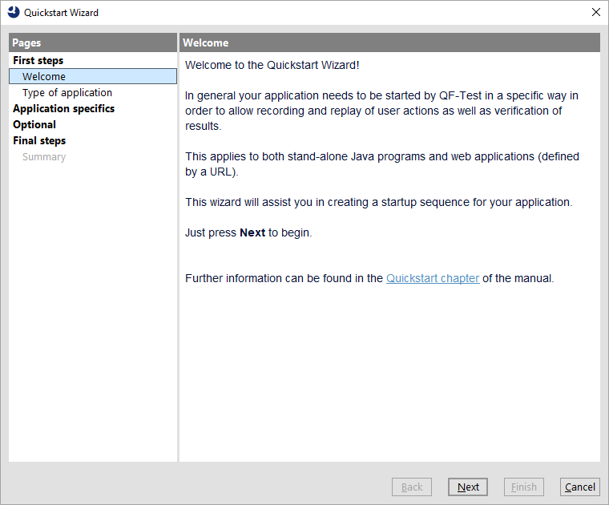
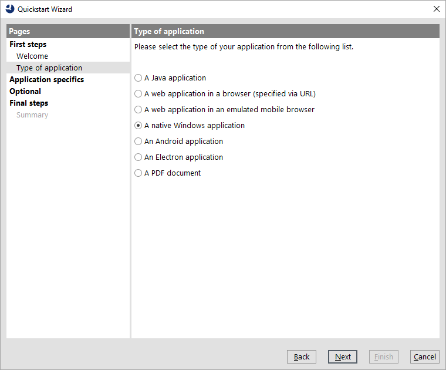
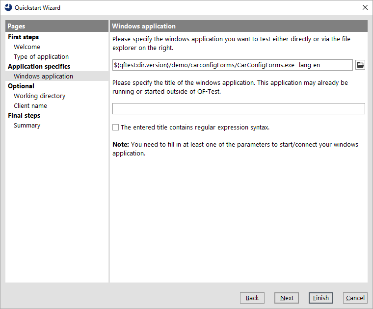
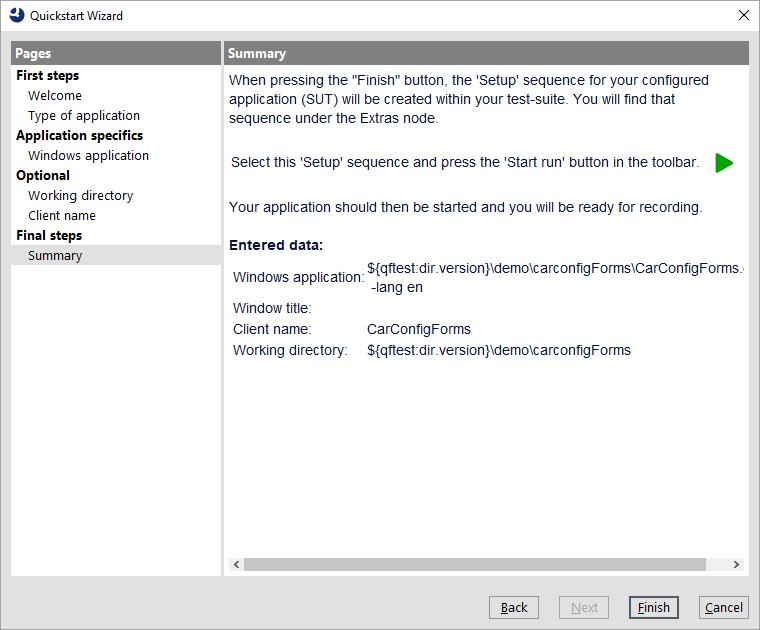
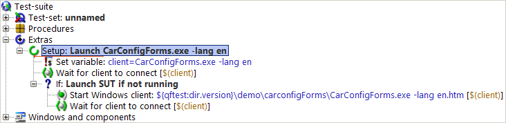
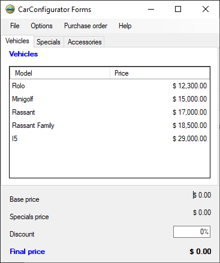

| Version 6.0.3 |
To begin, you need to launch the application from qftest. There is a Quickstart Wizard to help you in creating the respective setup sequence.
The Wizard starts up with a welcome message and some further information.
|
|  | ||
|
| Figure 20.1: The Quickstart Wizard | ||
In step two you can choose the type of application to be tested.
|
|  | ||
|
| Figure 20.2: Type of Application | ||
The next step specifies the Windows application executable.
qftest-6.0.3/demo/carconfigForms/
of the QF-Test installation.
CarConfigForms.exe.
The second field can be left empty in our case hence it should be mentioned that it is also possible to connect QF-Test to an already running Windows application by help of its window title. Such can be specified in the second field. Also regular expressions can be used for specifying those window titles.
Note In the figure below we used the QF-Test variable
${qftest:dir.version} to address the version specific directory of the
QF-Test installation, which you have already come across in the previous chapter. (Details
on special QF-Test variables can be found in the manual chapter Variables).
|
|  | ||
|
| Figure 20.3: Windows executable file selection. | ||
We directly reach the final summary that explains what will happen after closing the wizard and how to continue.
|
|  | ||
|
| Figure 20.4: Final Information | ||
The generated setup sequence Launch CarConfigForms appears in the "Extras" section of your test-suite and contains three parts:
NoteThe information whether the client is already running is stored into a variable "isSUTRunning" in the first 'Wait for client to connect' node and evaluated by the subsequent "If" condition. You can find this in the respective node details. This kind of conditional execution will be explained later in detail.
|
|  | ||
|
| Figure 20.5: Generated Setup Sequence | ||
Now we want to see some action:
You should see the Windows CarConfigurator application appear on your screen soon. As the focus changes back to QF-Test after the execution, the Demo might be covered by the test-suite window.
|
|  | ||
|
| Figure 20.6: The Windows CarConfigurator Demo | ||
At the end of this section let's save our test-suite.
Documents in your user home directory.
MyFirstTests.qft.
| Last update: 9/6/2022 Copyright © 2002-2022 Quality First Software GmbH |